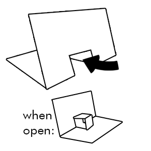

Gently push the flap that formed between the two cuts (the small rectangular section still attached to the paper) with your finger, pushing it inward toward the inside of the card. As the flap folds inward, a new crease forms along it.